1. MySQL体系架构
 MySQL Server架构自顶向下大致可以分网络连接层、服务层、存储引擎层和系统文件层。
MySQL Server架构自顶向下大致可以分网络连接层、服务层、存储引擎层和系统文件层。
1.1 网络连接层
客户端连接器（Client Connectors）：提供与MySQL服务器建立的支持。目前几乎支持所有主流的服务器编程技术，例如常见的Java、C、Python、.NET等，它们通过各自的API技术与MySQL建立连接。
1.2 服务层（MySQL Server）
服务层是MySQL Server的核心，主要包含系统管理和控制工具、连接池、SQL接口、解析器、查询优化器和缓存六个部分。 - 连接池（Connection Pool）：负责存储和管理客户端与数据库的连接，一个线程负责管理一个连接。 - 系统管理和控制工具（Management Services & Utilities）：例如备份恢复、安全管理、集群 管理等 - SQL接口（SQL Interface）：用于接受客户端发送的各种SQL命令，并且返回用户需要查询的结果。比如DML、DDL、存储过程、视图、触发器等。 - 解析器（Parser）：负责将请求的SQL解析生成一个"解析树"。然后根据一些MySQL规则进一步检查解析树是否合法。 - 查询优化器（Optimizer）：当“解析树”通过解析器语法检查后，将交由优化器将其转化成执行计划，然后与存储引擎交互。
select uid,name from user where gender=1; 选取–》投影–》联接 策略 1）select先根据where语句进行选取，并不是查询出全部数据再过滤 2）select查询根据uid和name进行属性投影，并不是取出所有字段 3）将前面选取和投影联接起来最终生成查询结果
缓存（Cache&Buffer）：缓存机制是由一系列小缓存组成的。比如表缓存，记录缓存，权限缓 存，引擎缓存等。如果查询缓存有命中的查询结果，查询语句就可以直接去查询缓存中取数据。
1.3 存储引擎层（Pluggable Storage Engines）
存储引擎负责MySQL中数据的存储与提取，与底层系统文件进行交互。MySQL存储引擎是插件式的，服务器中的查询执行引擎通过接口与存储引擎进行通信，接口屏蔽了不同存储引擎之间的差异 。现在有很多种存储引擎，各有各的特点，最常见的是MyISAM和InnoDB。
1.4 系统文件层（File System）
该层负责将数据库的数据和日志存储在文件系统之上，并完成与存储引擎的交互，是文件的物理存储层。主要包含日志文件，数据文件，配置文件，pid 文件，socket 文件等。
-
日志文件
-
- 错误日志（Error log）默认开启，show variables like ‘%log_error%’
- 通用查询日志（General query log）记录一般查询语句，show variables like ‘%general%’;
- 二进制日志（binary log） 记录了对MySQL数据库执行的更改操作，并且记录了语句的发生时间、执行时长；但是它不记录select、show等不修改数据库的SQL。主要用于数据库恢复和主从复制。 show variables like ‘%log_bin%’; //是否开启 show variables like ‘%binlog%’; //参数查看 show binary logs;//查看日志文件
- 慢查询日志（Slow query log） 记录所有执行时间超时的查询SQL，默认是10秒。 show variables like ‘%slow_query%’; //是否开启 show variables like ‘%long_query_time%’; //时长
-
配置文件 用于存放MySQL所有的配置信息文件，比如my.cnf、my.ini等。
-
数据文件
-
- db.opt 文件：记录这个库的默认使用的字符集和校验规则。
- frm 文件：存储与表相关的元数据（meta）信息，包括表结构的定义信息等，每一张表都会有一个frm 文件。
- MYD 文件：MyISAM 存储引擎专用，存放 MyISAM 表的数据（data)，每一张表都会有一个MYD 文件。
- MYI 文件：MyISAM 存储引擎专用，存放 MyISAM 表的索引相关信息，每一张 MyISAM 表对应一个 .MYI 文件。
- ibd文件和 IBDATA 文件：存放 InnoDB 的数据文件（包括索引）。InnoDB 存储引擎有两种表空间方式：独享表空间和共享表空间。独享表空间使用 .ibd 文件来存放数据，且每一张InnoDB 表对应一个 .ibd 文件。共享表空间使用 .ibdata 文件，所有表共同使用一个（或多个，自行配置）.ibdata 文件。
- ibdata1 文件：系统表空间数据文件，存储表元数据、Undo日志等 。
- ib_logfile0、ib_logfile1 文件：Redo log 日志文件。
-
pid 文件 pid 文件是 mysqld 应用程序在 Unix/Linux 环境下的一个进程文件，和许多其他 Unix/Linux 服务端程序一样，它存放着自己的进程 id。
-
socket 文件 socket 文件也是在 Unix/Linux 环境下才有的，用户在 Unix/Linux 环境下客户端连接可以不通过TCP/IP 网络而直接使用 Unix Socket 来连接 MySQL。
2. MySQL运行机制
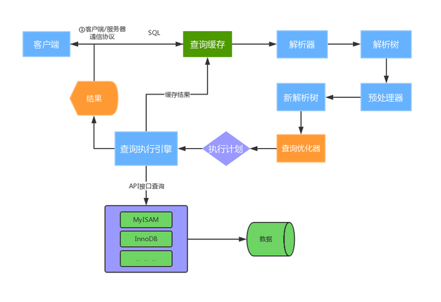
MySQL运行机制
2.1 建立连接（Connectors&Connection Pool）
通过客户端/服务器通信协议与MySQL建立连接。MySQL 客户端与服务端的通信方式是 “ 半双工 ”。对于每一个 MySQL 的连接，时刻都有一个线程状态来标识这个连接正在做什么。 通讯机制：
-
全双工：能同时发送和接收数据，例如平时打电话。
-
半双工：指的某一时刻，要么发送数据，要么接收数据，不能同时。例如早期对讲机
-
单工：只能发送数据或只能接收数据。例如单行道 线程状态： show processlist; //查看用户正在运行的线程信息，root用户能查看所有线程，其他用户只能看自己的
-
id：线程ID，可以使用kill xx；
-
user：启动这个线程的用户
-
Host：发送请求的客户端的IP和端口号
-
db：当前命令在哪个库执行
-
Command：该线程正在执行的操作命令
-
- Create DB：正在创建库操作
- Drop DB：正在删除库操作
- Execute：正在执行一个PreparedStatement
- Close Stmt：正在关闭一个PreparedStatement
- Query：正在执行一个语句
- Sleep：正在等待客户端发送语句
- Quit：正在退出
- Shutdown：正在关闭服务器
-
Time：表示该线程处于当前状态的时间，单位是秒
-
State：线程状态
-
- Updating：正在搜索匹配记录，进行修改
- Sleeping：正在等待客户端发送新请求
- Starting：正在执行请求处理
- Checking table：正在检查数据表
- Closing table : 正在将表中数据刷新到磁盘中
- Locked：被其他查询锁住了记录
- Sending Data：正在处理Select查询，同时将结果发送给客户端
-
Info：一般记录线程执行的语句，默认显示前100个字符。想查看完整的使用show full processlist;
2.2 查询缓存（Cache&Buffer）
这是MySQL的一个可优化查询的地方，如果开启了查询缓存且在查询缓存过程中查询到完全相同的SQL语句，则将查询结果直接返回给客户端；如果没有开启查询缓存或者没有查询到完全相同的 SQL 语句则会由解析器进行语法语义解析，并生成“解析树”。
-
缓存Select查询的结果和SQL语句
-
执行Select查询时，先查询缓存，判断是否存在可用的记录集，要求是否完全相同（包括参数值），这样才会匹配缓存数据命中。
-
即使开启查询缓存，以下SQL也不能缓存
-
- 查询语句使用SQL_NO_CACHE
- 查询的结果大于query_cache_limit设置
- 查询中有一些不确定的参数，比如now()
-
show variables like ‘%query_cache%’; //查看查询缓存是否启用，空间大小，限制等
-
show status like ‘Qcache%’; //查看更详细的缓存参数，可用缓存空间，缓存块，缓存多少等
2.3 解析器（Parser）
将客户端发送的SQL进行语法解析，生成"解析树"。预处理器根据一些MySQL规则进一步检查“解析树”是否合法，例如这里将检查数据表和数据列是否存在，还会解析名字和别名，看看它们是否有歧义，最后生成新的“解析树”。
2.4 查询优化器（Optimizer）
根据“解析树”生成最优的执行计划。MySQL使用很多优化策略生成最优的执行计划，可以分为两类：静态优化（编译时优化）、动态优化（运行时优化）。
-
等价变换策略
-
- 5=5 and a>5 改成 a > 5
- a < b and a=5 改成b>5 and a=5
- 基于联合索引，调整条件位置等
-
优化count、min、max等函数
-
- InnoDB引擎min函数只需要找索引最左边
- InnoDB引擎max函数只需要找索引最右边
- MyISAM引擎count(*)，不需要计算，直接返回
-
提前终止查询
-
- 使用了limit查询，获取limit所需的数据，就不在继续遍历后面数据
-
in的优化
-
- MySQL对in查询，会先进行排序，再采用二分法查找数据。比如where id in (2,1,3)，变成 in (1,2,3)
2.5 查询执行引擎负责执行 SQL 语句
此时查询执行引擎会根据 SQL 语句中表的存储引擎类型，以及对应的API接口与底层存储引擎缓存或者物理文件的交互，得到查询结果并返回给客户端。若开启用查询缓存，这时会将SQL 语句和结果完整地保存到查询缓存（Cache&Buffer）中，以后若有相同的 SQL 语句执行则直接返回结果。
- 如果开启了查询缓存，先将查询结果做缓存操作
- 返回结果过多，采用增量模式返回
3.MySQL存储引擎
存储引擎在MySQL的体系架构中位于第三层，负责MySQL中的数据的存储和提取，是与文件打交道的子系统，它是根据MySQL提供的文件访问层抽象接口定制的一种文件访问机制，这种机制就叫作存储引擎。 使用show engines命令，就可以查看当前数据库支持的引擎信息。
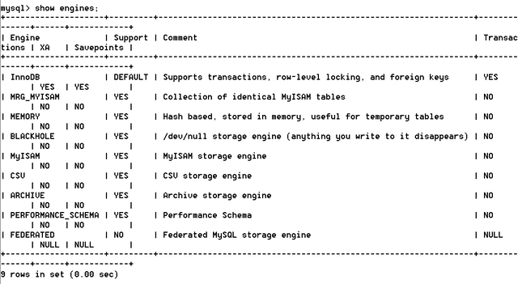
在5.5版本之前默认采用MyISAM存储引擎，从5.5开始采用InnoDB存储引擎。
- InnoDB：支持事务，具有提交，回滚和崩溃恢复能力，事务安全
- MyISAM：不支持事务和外键，访问速度快
- Memory：利用内存创建表，访问速度非常快，因为数据在内存，而且默认使用Hash索引，但是一旦关闭，数据就会丢失
- Archive：归档类型引擎，仅能支持insert和select语句
- Csv：以CSV文件进行数据存储，由于文件限制，所有列必须强制指定not null，另外CSV引擎也不支持索引和分区，适合做数据交换的中间表
- BlackHole: 黑洞，只进不出，进来消失，所有插入数据都不会保存
- Federated：可以访问远端MySQL数据库中的表。一个本地表，不保存数据，访问远程表内容
- MRG_MyISAM：一组MyISAM表的组合，这些MyISAM表必须结构相同，Merge表本身没有数据，对Merge操作可以对一组MyISAM表进行操作。
3.1 InnoDB和MyISAM对比
InnoDB和MyISAM是使用MySQL时最常用的两种引擎类型，来看下它们的区别
-
事务和外键 InnoDB支持事务和外键，具有安全性和完整性，适合大量insert或update操作 MyISAM不支持事务和外键，它提供高速存储和检索，适合大量的select查询操作
-
锁机制 InnoDB支持行级锁，锁定指定记录。基于索引来加锁实现。 MyISAM支持表级锁，锁定整张表。
-
索引结构 InnoDB使用聚集索引（聚簇索引），索引和记录在一起存储，既缓存索引，也缓存记录。 MyISAM使用非聚集索引（非聚簇索引），索引和记录分开。
-
并发处理能力 MyISAM使用表锁，会导致写操作并发率低，读之间并不阻塞，读写阻塞。 InnoDB读写阻塞可以与隔离级别有关，可以采用多版本并发控制（MVCC）来支持高并发
-
存储文件 InnoDB表对应两个文件，一个.frm表结构文件，一个.ibd数据文件。InnoDB表最大支持64TB； MyISAM表对应三个文件，一个.frm表结构文件，一个MYD表数据文件，一个.MYI索引文件。从MySQL5.0开始默认限制是256TB。
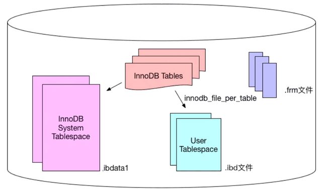
适用场景： MyISAM
- 不需要事务支持（不支持）
- 并发相对较低（锁定机制问题）
- 数据修改相对较少，以读为主
- 数据一致性要求不高
InnoDB
- 需要事务支持（具有较好的事务特性）
- 行级锁定对高并发有很好的适应能力
- 数据更新较为频繁的场景
- 数据一致性要求较高
- 硬件设备内存较大，可以利用InnoDB较好的缓存能力来提高内存利用率，减少磁盘IO
总结： 两种引擎该如何选择？
- 是否需要事务？有，InnoDB
- 是否存在并发修改？有，InnoDB
- 是否追求快速查询，且数据修改少？是，MyISAM
- 在绝大多数情况下，推荐使用InnoDB
3.2 InnoDB存储结构
从MySQL 5.5版本开始默认使用InnoDB作为引擎，它擅长处理事务，具有自动崩溃恢复的特性，在日常开发中使用非常广泛。下面是官方的InnoDB引擎架构图，主要分为内存结构和磁盘结构两大部分。
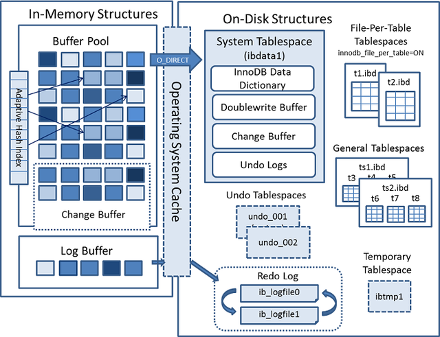
InnoDB引擎架构图
3.2.1 InnoDB内存结构
内存结构主要包括Buffer Pool、Change Buffer、Adaptive Hash Index和Log Buffer四大组件。
-
Buffer Pool
：缓冲池，简称BP。BP以Page页为单位，默认大小16K，BP的底层采用链表数据结构管理Page。在InnoDB访问表记录和索引时会在Page页中缓存，以后使用可以减少磁盘IO操作，提升效率。
-
-
free page ： 空闲page，未被使用
-
clean page：被使用page，数据没有被修改过
-
dirty page：脏页，被使用page，数据被修改过，页中数据和磁盘的数据产生了不一致 针对上述三种page类型，InnoDB通过三种链表结构来维护和管理
-
free list ：表示空闲缓冲区，管理free page
-
flush list：表示需要刷新到磁盘的缓冲区，管理dirty page，内部page按修改时间排序。脏页即存在于flush链表，也在LRU链表中，但是两种互不影响，LRU链表负责管理page的可用性和释放，而flush链表负责管理脏页的刷盘操作。
-
lru list：表示正在使用的缓冲区，管理clean page和dirty page，缓冲区以midpoint为基点，前面链表称为new列表区，存放经常访问的数据，占63%；后面的链表称为old列表区，存放使用较少数据，占37%。
-
Page管理机制
Page根据状态可以分为三种类型：
-
改进型LRU算法维护 普通LRU：末尾淘汰法，新数据从链表头部加入，释放空间时从末尾淘汰 改性LRU：链表分为new和old两个部分，加入元素时并不是从表头插入，而是从中间midpoint位置插入，如果数据很快被访问，那么page就会向new列表头部移动，如果数据没有被访问，会逐步向old尾部移动，等待淘汰。 每当有新的page数据读取到buffer pool时，InnoDb引擎会判断是否有空闲页，是否足够，如果有就将free page从free list列表删除，放入到LRU列表中。没有空闲页，就会根据LRU算法淘汰LRU链表默认的页，将内存空间释放分配给新的页。
-
Buffer Pool配置参数 show variables like ‘%innodb_page_size%’; //查看page页大小 show variables like ‘%innodb_old%’; //查看lru list中old列表参数 show variables like ‘%innodb_buffer%’; //查看buffer pool参数 建议：将innodb_buffer_pool_size设置为总内存大小的60%-80%， innodb_buffer_pool_instances可以设置为多个，这样可以避免缓存争夺。
-
-
Change Buffer：写缓冲区，简称CB。在进行DML操作时，如果BP没有其相应的Page数据，并不会立刻将磁盘页加载到缓冲池，而是在CB记录缓冲变更，等未来数据被读取时，再将数据合并恢复到BP中。ChangeBuffer占用BufferPool空间，默认占25%，最大允许占50%，可以根据读写业务量来进行调整。参数innodb_change_buffer_max_size;当更新一条记录时，该记录在BufferPool存在，直接在BufferPool修改，一次内存操作。如果该记录在BufferPool不存在（没有命中），会直接在ChangeBuffer进行一次内存操作，不用再去磁盘查询数据，避免一次磁盘IO。当下次查询记录时，会先进性磁盘读取，然后再从ChangeBuffer中读取信息合并，最终载入BufferPool中。写缓冲区，仅适用于非唯一普通索引页，为什么？ 如果在索引设置唯一性，在进行修改时，InnoDB必须要做唯一性校验，因此必须查询磁盘，做一次IO操作。会直接将记录查询到BufferPool中，然后在缓冲池修改，不会在ChangeBuffer操作。
-
Adaptive Hash Index：自适应哈希索引，用于优化对BP数据的查询。InnoDB存储引擎会监控对表索引的查找，如果观察到建立哈希索引可以带来速度的提升，则建立哈希索引，所以称之为自适应。InnoDB存储引擎会自动根据访问的频率和模式来为某些页建立哈希索引。
-
Log Buffer
：日志缓冲区，用来保存要写入磁盘上log文件（Redo/Undo）的数据，日志缓冲区的内容定期刷新到磁盘log文件中。日志缓冲区满时会自动将其刷新到磁盘，当遇到BLOB或多行更新的大事务操作时，增加日志缓冲区可以节省磁盘I/O。LogBuffer主要是用于记录InnoDB引擎日志，在DML操作时会产生Redo和Undo日志。LogBuffer空间满了，会自动写入磁盘。可以通过将innodb_log_buffer_size参数调大，减少磁盘IO频率innodb_flush_log_at_trx_commit参数控制日志刷新行为，默认为1
-
- 0 ： 每隔1秒写日志文件和刷盘操作（写日志文件LogBuffer–>OS cache，刷盘OScache–>磁盘文件），最多丢失1秒数据
- 1：事务提交，立刻写日志文件和刷盘，数据不丢失，但是会频繁IO操作
- 2：事务提交，立刻写日志文件，每隔1秒钟进行刷盘操作
3.2.2 InnoDB磁盘结构
InnoDB磁盘主要包含Tablespaces，InnoDB Data Dictionary，Doublewrite Buffer、Redo Log和Undo Logs。
-
表空间（Tablespaces）
：用于存储表结构和数据。表空间又分为系统表空间、独立表空间、通用表空间、临时表空间、Undo表空间等多种类型；
-
- 系统表空间（The System Tablespace） 包含InnoDB数据字典，Doublewrite Buffer，Change Buffer，Undo Logs的存储区域。系统表空间也默认包含任何用户在系统表空间创建的表数据和索引数据。系统表空间是一个共享的表空间因为它是被多个表共享的。该空间的数据文件通过参数innodb_data_file_path控制，默认值是ibdata1:12M:autoextend(文件名为ibdata1、12MB、自动扩展)。
- 独立表空间（File-Per-Table Tablespaces） 默认开启，独立表空间是一个单表表空间，该表创建于自己的数据文件中，而非创建于系统表空间中。当innodb_file_per_table选项开启时，表将被创建于表空间中。否则，innodb将被创建于系统表空间中。每个表文件表空间由一个.ibd数据文件代表，该文件默认被创建于数据库目录中。表空间的表文件支持动态（dynamic）和压缩 （commpressed）行格式。
- 通用表空间（General Tablespaces） 通用表空间为通过create tablespace语法创建的共享表空间。通用表空间可以创建于 mysql数据目录外的其他表空间，其可以容纳多张表，且其支持所有的行格式。
1 | CREATE TABLESPACE ts1 ADD DATAFILE ts1.ibd Engine=InnoDB; //创建表空 间ts1 |
- 撤销表空间（Undo Tablespaces） 撤销表空间由一个或多个包含Undo日志文件组成。在MySQL 5.7版本之前Undo占用的是System Tablespace共享区，从5.7开始将Undo从System Tablespace分离了出来。InnoDB使用的undo表空间由innodb_undo_tablespaces配置选项控制，默认为0。参数值为0表示使用系统表空间ibdata1;大于0表示使用undo表空间undo_001、undo_002等。
- 临时表空间（Temporary Tablespaces） 分为session temporary tablespaces 和global temporary tablespace两种。sessiontemporary tablespaces 存储的是用户创建的临时表和磁盘内部的临时表。global temporary tablespace储存用户临时表的回滚段（rollback segments ）。mysql服务器正常关闭或异常终止时，临时表空间将被移除，每次启动时会被重新创建。
- 数据字典（InnoDB Data Dictionary） InnoDB数据字典由内部系统表组成，这些表包含用于查找表、索引和表字段等对象的元数据。元数据物理上位于InnoDB系统表空间中。由于历史原因，数据字典元数据在一定程度上与InnoDB表元数据文件（.frm文件）中存储的信息重叠。
- 双写缓冲区（Doublewrite Buffer） 位于系统表空间，是一个存储区域。在BufferPage的page页刷新到磁盘真正的位置前，会先将数据存在Doublewrite 缓冲区。如果在page页写入过程中出现操作系统、存储子系统或mysqld进程崩溃，InnoDB可以在崩溃恢复期间从Doublewrite 缓冲区中找到页面的一个好备份。在大多数情况下，默认情况下启用双写缓冲区，要禁用Doublewrite 缓冲区，可以将innodb_doublewrite设置为0。使用Doublewrite 缓冲区时建议将innodb_flush_method设置为O_DIRECT。
MySQL的innodb_flush_method这个参数控制着innodb数据文件及redo log的打开、刷写模式。有三个值：fdatasync(默认)，O_DSYNC，O_DIRECT。设置O_DIRECT表示数据文件写入操作会通知操作系统不要缓存数据，也不要用预读，直接从Innodb Buffer写到磁盘文件。默认的fdatasync意思是先写入操作系统缓存，然后再调用fsync()函数去异步刷数据文件与redo log的缓存信息。
- 重做日志（Redo Log） 重做日志是一种基于磁盘的数据结构，用于在崩溃恢复期间更正不完整事务写入的数据。MySQL以循环方式写入重做日志文件，记录InnoDB中所有对Buffer Pool修改的日志。当出现实例故障（像断电），导致数据未能更新到数据文件，则数据库重启时须redo，重新把数据更新到数据文件。读写事务在执行的过程中，都会不断的产生redo log。默认情况下，重做日志在磁盘上由两个名为ib_logfile0和ib_logfile1的文件物理表示。
- 撤销日志（Undo Logs） 撤消日志是在事务开始之前保存的被修改数据的备份，用于例外情况时回滚事务。撤消日志属于逻辑日志，根据每行记录进行记录。撤消日志存在于系统表空间、撤消表空间和临时表空间中。
3.3 InnoDB线程模型
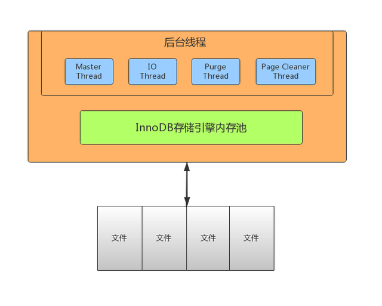
-
IO Thread 在InnoDB中使用了大量的AIO（Async IO）来做读写处理，这样可以极大提高数据库的性能。在InnoDB1.0版本之前共有4个IO Thread，分别是write，read，insert buffer和log thread，后来版本将read thread和write thread分别增大到了4个，一共有10个了。
-
- read thread ： 负责读取操作，将数据从磁盘加载到缓存page页。4个
- write thread：负责写操作，将缓存脏页刷新到磁盘。4个
- log thread：负责将日志缓冲区内容刷新到磁盘。1个
- insert buffer thread ：负责将写缓冲内容刷新到磁盘。1个
-
Purge Thread 事务提交之后，其使用的undo日志将不再需要，因此需要Purge Thread回收已经分配的undo页。 show variables like ‘%innodb_purge_threads%’;
-
Page Cleaner Thread 作用是将脏数据刷新到磁盘，脏数据刷盘后相应的redo log也就可以覆盖，即可以同步数据，又能达到redo log循环使用的目的。会调用write thread线程处理。 show variables like ‘%innodb_page_cleaners%’;
-
Master Thread Master thread是InnoDB的主线程，负责调度其他各线程，优先级最高。作用是将缓冲池中的数据异步刷新到磁盘 ，保证数据的一致性。包含：脏页的刷新（page cleaner thread）、undo页回收（purge thread）、redo日志刷新（log thread）、合并写缓冲等。内部有两个主处理，分别是每隔1秒和10秒处理。 每1秒的操作：
-
- 刷新日志缓冲区，刷到磁盘
- 合并写缓冲区数据，根据IO读写压力来决定是否操作
- 刷新脏页数据到磁盘，根据脏页比例达到75%才操作（innodb_max_dirty_pages_pct，innodb_io_capacity） 每10秒的操作：
- 刷新脏页数据到磁盘
- 合并写缓冲区数据
- 刷新日志缓冲区
- 删除无用的undo页
3.4 InnoDB数据文件
3.4.1 InnoDB文件存储结构
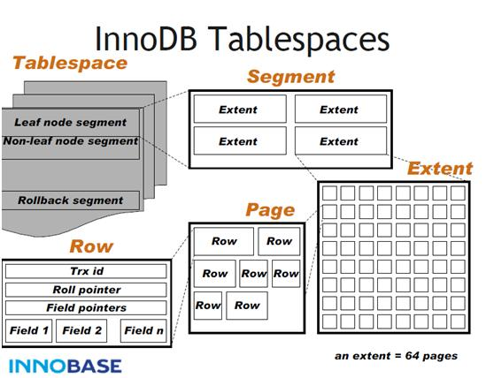
InnoDB数据文件存储结构： 分为一个ibd数据文件–>Segment（段）–>Extent（区）–>Page（页）–>Row（行）
- Tablesapce 表空间，用于存储多个ibd数据文件，用于存储表的记录和索引。一个文件包含多个段。
- Segment 段，用于管理多个Extent，分为数据段（Leaf node segment）、索引段（Non-leaf nodesegment）、回滚段（Rollback segment）。一个表至少会有两个segment，一个管理数据，一个管理索引。每多创建一个索引，会多两个segment。
- Extent 区，一个区固定包含64个连续的页，大小为1M。当表空间不足，需要分配新的页资源，不会一页一页分，直接分配一个区。
- Page 页，用于存储多个Row行记录，大小为16K。包含很多种页类型，比如数据页，undo页，系统页，事务数据页，大的BLOB对象页。
- Row 行，包含了记录的字段值，事务ID（Trx id）、滚动指针（Roll pointer）、字段指针（Field pointers）等信息。
Page是文件最基本的单位，无论何种类型的page，都是由page header，page trailer和page body组成。如下图所示，
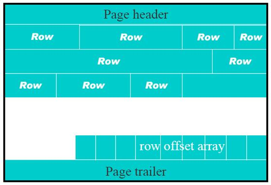
3.4.2 InnoDB文件存储格式
通过 SHOW TABLE STATUS 命令
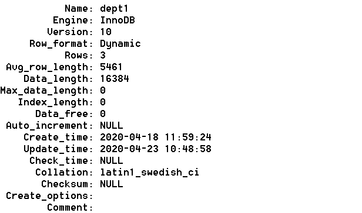
一般情况下，如果row_format为REDUNDANT、COMPACT，文件格式为Antelope；如果row_format为DYNAMIC和COMPRESSED，文件格式为Barracuda。 通过 information_schema 查看指定表的文件格式。
1 | select * from information_schema.innodb_sys_tables; |
3.4.3 File文件格式（File-Format）
在早期的InnoDB版本中，文件格式只有一种，随着InnoDB引擎的发展，出现了新文件格式，用于支持新的功能。目前InnoDB只支持两种文件格式：Antelope 和 Barracuda。
- Antelope: 先前未命名的，最原始的InnoDB文件格式，它支持两种行格式：COMPACT和REDUNDANT，MySQL 5.6及其以前版本默认格式为Antelope。
- Barracuda: 新的文件格式。它支持InnoDB的所有行格式，包括新的行格式：COMPRESSED和 DYNAMIC。 通过innodb_file_format 配置参数可以设置InnoDB文件格式，之前默认值为Antelope，5.7版本开始改为Barracuda。
3.4.4 Row行格式（Row_format）
表的行格式决定了它的行是如何物理存储的，这反过来又会影响查询和DML操作的性能。如果在单个page页中容纳更多行，查询和索引查找可以更快地工作，缓冲池中所需的内存更少，写入更新时所需的I/O更少。 InnoDB存储引擎支持四种行格式：REDUNDANT、COMPACT、DYNAMIC和COMPRESSED。
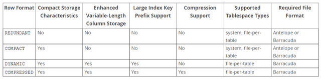
DYNAMIC和COMPRESSED新格式引入的功能有：数据压缩、增强型长列数据的页外存储和大索引前缀。 每个表的数据分成若干页来存储，每个页中采用B树结构存储；如果某些字段信息过长，无法存储在B树节点中，这时候会被单独分配空间，此时被称为溢出页，该字段被称为页外列。
- REDUNDANT 行格式 使用REDUNDANT行格式，表会将变长列值的前768字节存储在B树节点的索引记录中，其余的存储在溢出页上。对于大于等于786字节的固定长度字段InnoDB会转换为变长字段，以便能够在页外存储。
- COMPACT 行格式 与REDUNDANT行格式相比，COMPACT行格式减少了约20%的行存储空间，但代价是增加了某些操作的CPU使用量。如果系统负载是受缓存命中率和磁盘速度限制，那么COMPACT格式可能更快。如果系统负载受到CPU速度的限制，那么COMPACT格式可能会慢一些。
- DYNAMIC 行格式 使用DYNAMIC行格式，InnoDB会将表中长可变长度的列值完全存储在页外，而索引记录只包含指向溢出页的20字节指针。大于或等于768字节的固定长度字段编码为可变长度字段。DYNAMIC行格式支持大索引前缀，最多可以为3072字节，可通过innodb_large_prefix参数控制。
- COMPRESSED 行格式 COMPRESSED行格式提供与DYNAMIC行格式相同的存储特性和功能，但增加了对表和索引数据压缩的支持。
在创建表和索引时，文件格式都被用于每个InnoDB表数据文件（其名称与*.ibd匹配）。修改文件格式的方法是重新创建表及其索引，最简单方法是对要修改的每个表使用以下命令：
1 | ALTER TABLE 表名 ROW_FORMAT=格式类型; |
3.5 Undo Log
3.5.1 Undo Log介绍
Undo：意为撤销或取消，以撤销操作为目的，返回指定某个状态的操作。 Undo Log：数据库事务开始之前，会将要修改的记录存放到 Undo 日志里，当事务回滚时或者数据库崩溃时，可以利用 Undo 日志，撤销未提交事务对数据库产生的影响。 Undo Log产生和销毁：Undo Log在事务开始前产生；事务在提交时，并不会立刻删除undo log，innodb会将该事务对应的undo log放入到删除列表中，后面会通过后台线程purge thread进行回收处理。Undo Log属于逻辑日志，记录一个变化过程。例如执行一个delete，undolog会记录一个insert；执行一个update，undolog会记录一个相反update。 Undo Log存储：undo log采用段的方式管理和记录。在innodb数据文件中包含一种rollback segment回滚段，内部包含1024个undo log segment。可以通过下面一组参数来控制Undo log存储。
1 | show variables like '%innodb_undo%'; |
3.5.2 Undo Log作用
-
实现事务的原子性 Undo Log 是为了实现事务的原子性而出现的产物。事务处理过程中，如果出现了错误或者用户执行了 ROLLBACK 语句，MySQL 可以利用 Undo Log 中的备份将数据恢复到事务开始之前的状态。
-
实现多版本并发控制（MVCC）
Undo Log 在 MySQL InnoDB 存储引擎中用来实现多版本并发控制。事务未提交之前，Undo Log保存了未提交之前的版本数据，Undo Log 中的数据可作为数据旧版本快照供其他并发事务进行快照读。
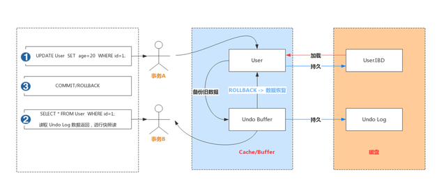
事务A手动开启事务，执行更新操作，首先会把更新命中的数据备份到 Undo Buffer 中。
事务B手动开启事务，执行查询操作，会读取 Undo 日志数据返回，进行快照读
3.6 Redo Log和Binlog
Redo Log和Binlog是MySQL日志系统中非常重要的两种机制，也有很多相似之处，下面介绍下两者细节和区别。
3.6.1 Redo Log日志
3.6.1.1 Redo Log介绍
Redo：顾名思义就是重做。以恢复操作为目的，在数据库发生意外时重现操作。 Redo Log：指事务中修改的任何数据，将最新的数据备份存储的位置（Redo Log），被称为重做日志。 Redo Log 的生成和释放：随着事务操作的执行，就会生成Redo Log，在事务提交时会将产生Redo Log写入Log Buffer，并不是随着事务的提交就立刻写入磁盘文件。等事务操作的脏页写入到磁盘之后，Redo Log 的使命也就完成了，Redo Log占用的空间就可以重用（被覆盖写入）。
3.6.1.2 Redo Log工作原理
Redo Log 是为了实现事务的持久性而出现的产物。防止在发生故障的时间点，尚有脏页未写入表的 IBD 文件中，在重启 MySQL 服务的时候，根据 Redo Log 进行重做，从而达到事务的未入磁盘数据进行持久化这一特性。
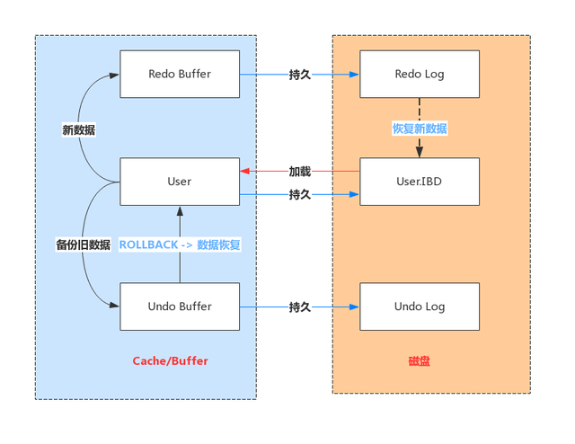
3.6.1.3 Redo Log写入机制
Redo Log 文件内容是以顺序循环的方式写入文件，写满时则回溯到第一个文件，进行覆盖写。
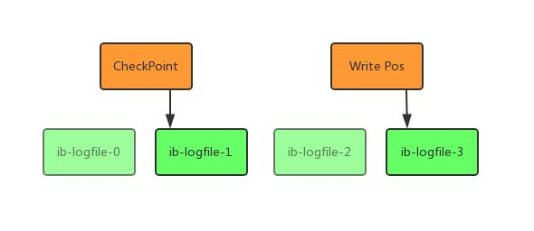
如图所示：
- write pos 是当前记录的位置，一边写一边后移，写到最后一个文件末尾后就回到 0 号文件开头；
- checkpoint 是当前要擦除的位置，也是往后推移并且循环的，擦除记录前要把记录更新到数据文件；
write pos 和 checkpoint 之间还空着的部分，可以用来记录新的操作。如果 write pos 追上checkpoint，表示写满，这时候不能再执行新的更新，得停下来先擦掉一些记录，把 checkpoint推进一下。
3.6.1.4 Redo Log相关配置参数
每个InnoDB存储引擎至少有1个重做日志文件组（group），每个文件组至少有2个重做日志文件，默认为ib_logfile0和ib_logfile1。可以通过下面一组参数控制Redo Log存储：
1 | show variables like '%innodb_log%'; |
Redo Buffer 持久化到 Redo Log 的策略，可通过 Innodb_flush_log_at_trx_commit 设置：
- 0：每秒提交 Redo buffer ->OS cache -> flush cache to disk，可能丢失一秒内的事务数据。由后台Master线程每隔 1秒执行一次操作。
- 1（默认值）：每次事务提交执行 Redo Buffer -> OS cache -> flush cache to disk，最安全，性能最差的方式。
- 2：每次事务提交执行 Redo Buffer -> OS cache，然后由后台Master线程再每隔1秒执行OS cache -> flush cache to disk 的操作。
一般建议选择取值2，因为 MySQL 挂了数据没有损失，整个服务器挂了才会损失1秒的事务提交数据。
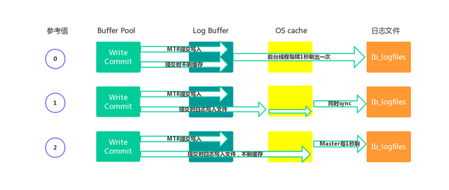
3.6.2 Binlog日志
3.6.2.1 Binlog记录模式
Redo Log 是属于InnoDB引擎所特有的日志，而MySQL Server也有自己的日志，即 Binary log（二进制日志），简称Binlog。Binlog是记录所有数据库表结构变更以及表数据修改的二进制日志，不会记录SELECT和SHOW这类操作。Binlog日志是以事件形式记录，还包含语句所执行的消耗时间。开启Binlog日志有以下两个最重要的使用场景。
- 主从复制：在主库中开启Binlog功能，这样主库就可以把Binlog传递给从库，从库拿到Binlog后实现数据恢复达到主从数据一致性。
- 数据恢复：通过mysqlbinlog工具来恢复数据。
Binlog文件名默认为“主机名_binlog-序列号”格式，例如oak_binlog-000001，也可以在配置文件中指定名称。文件记录模式有STATEMENT、ROW和MIXED三种，具体含义如下。
- ROW（row-based replication, RBR）：日志中会记录每一行数据被修改的情况，然后在slave端对相同的数据进行修改。 优点：能清楚记录每一个行数据的修改细节，能完全实现主从数据同步和数据的恢复。 缺点：批量操作，会产生大量的日志，尤其是alter table会让日志暴涨。
- STATMENT（statement-based replication, SBR）：每一条被修改数据的SQL都会记录到master的Binlog中，slave在复制的时候SQL进程会解析成和原来master端执行过的相同的SQL再次执行。简称SQL语句复制。 优点：日志量小，减少磁盘IO，提升存储和恢复速度 缺点：在某些情况下会导致主从数据不一致，比如last_insert_id()、now()等函数。
- MIXED（mixed-based replication, MBR）：以上两种模式的混合使用，一般会使用STATEMENT模式保存binlog，对于STATEMENT模式无法复制的操作使用ROW模式保存binlog，MySQL会根据执行的SQL语句选择写入模式。
3.6.2.2 Binlog文件结构
MySQL的binlog文件中记录的是对数据库的各种修改操作，用来表示修改操作的数据结构是Log event。不同的修改操作对应的不同的log event。比较常用的log event有：Query event、Row event、Xid event等。binlog文件的内容就是各种Log event的集合。 Binlog文件中Log event结构如下图所示：
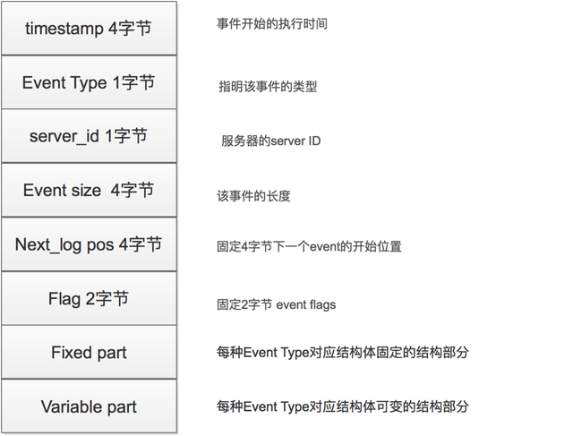
3.6.2.3 Binlog写入机制
- 根据记录模式和操作触发event事件生成log event（事件触发执行机制）
- 将事务执行过程中产生log event写入缓冲区，每个事务线程都有一个缓冲区 Log Event保存在一个binlog_cache_mngr数据结构中，在该结构中有两个缓冲区，一个是stmt_cache，用于存放不支持事务的信息；另一个是trx_cache，用于存放支持事务的信息。
- 事务在提交阶段会将产生的log event写入到外部binlog文件中。 不同事务以串行方式将log event写入binlog文件中，所以一个事务包含的log event信息在binlog文件中是连续的，中间不会插入其他事务的log event。
3.6.2.4 Binlog文件操作
- Binlog状态查看
1 | show variables like 'log_bin'; |
- 开启Binlog功能
1 | mysql> set global log_bin=mysqllogbin; |
需要修改my.cnf或my.ini配置文件，在[mysqld]下面增加log_bin=mysql_bin_log，重启MySQL服务。
1 | #log-bin=ON |
- 使用show binlog events命令
1 | show binary logs; //等价于show master logs; |
- 使用mysqlbinlog 命令
1 | mysqlbinlog "文件名" |
- 使用 binlog 恢复数据
1 | //按指定时间恢复 |
mysqldump：定期全部备份数据库数据。mysqlbinlog可以做增量备份和恢复操作。
- 删除Binlog文件
1 | purge binary logs to 'mysqlbinlog.000001'; //删除指定文件 |
可以通过设置expire_logs_days参数来启动自动清理功能。默认值为0表示没启用。设置为1表示超出1天binlog文件会自动删除掉。
3.6.2.5 Redo Log和Binlog区别
- Redo Log是属于InnoDB引擎功能，Binlog是属于MySQL Server自带功能，并且是以二进制文件记录。
- Redo Log属于物理日志，记录该数据页更新状态内容，Binlog是逻辑日志，记录更新过程。
- Redo Log日志是循环写，日志空间大小是固定，Binlog是追加写入，写完一个写下一个，不会覆盖使用。
- Redo Log作为服务器异常宕机后事务数据自动恢复使用，Binlog可以作为主从复制和数据恢复使用。Binlog没有自动crash-safe能力。
If you like this blog or find it useful for you, you are welcome to comment on it. You are also welcome to share this blog, so that more people can participate in it. If the images used in the blog infringe your copyright, please contact the author to delete them. Thank you !